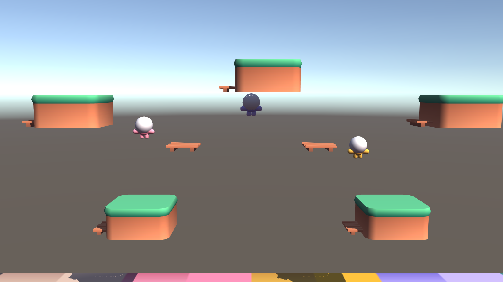
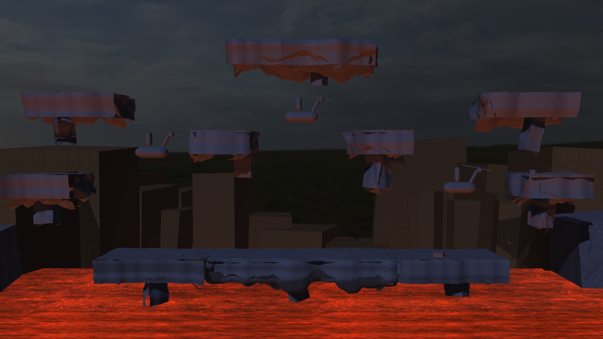
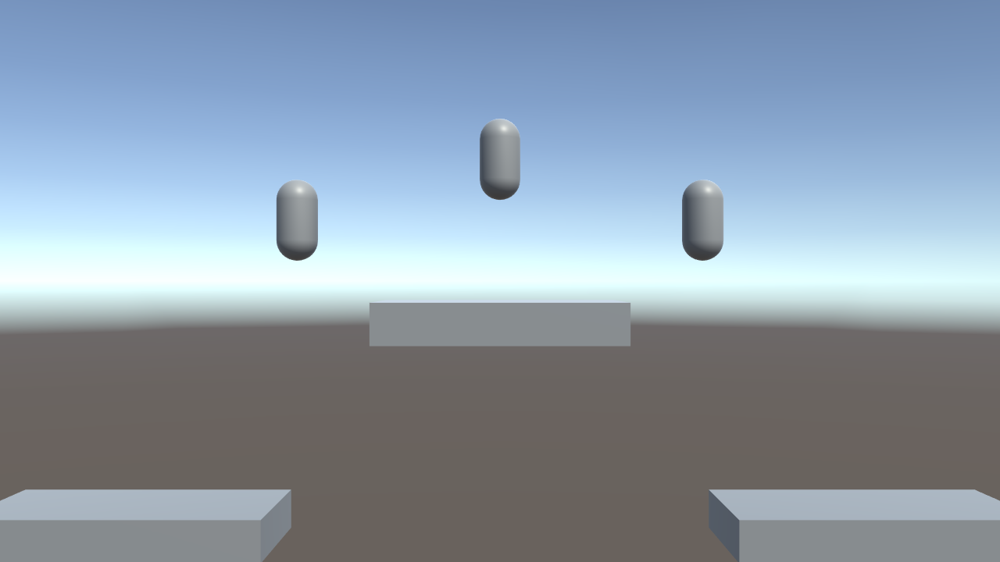

Project creation
held"G:/UnityEditors/6000.5.10f1/Editor/Unity.exe" -createProject "I:/Joust/unity/JoustUnity" \ -batchmode -quit -nographics -logFile "I:/Joust/unity/artifacts/create.log"
Rebuilding a pygame Joust clone as a native Unity 6 game with full 3D graphics on a 2.5D gameplay plane. This page tracks the build as it happens: milestones, spike findings, screenshots, and commits.
| M0 | Verification spike Prove every engine assumption by execution before planning M1. |
in progress |
| M1 | Core loop Flight, one arena, one buzzard tier, joust resolution, death and respawn, HUD. |
queued |
| M2 | Parity Three tiers, eggs, pterodactyl, lava troll, wave schedule, two-player, hi-score. |
queued |
| M3 | Presentation URP lighting and VFX, camera juice, audio mix, animation polish. |
queued |
| M4 | New content Arena variants, three new enemies, power-ups, the Skylord boss. |
queued |
| M5 | Ship IL2CPP Windows build and a user smoke test. |
queued |
"G:/UnityEditors/6000.5.10f1/Editor/Unity.exe" -createProject "I:/Joust/unity/JoustUnity" \ -batchmode -quit -nographics -logFile "I:/Joust/unity/artifacts/create.log"
Setup. com.unity.render-pipelines.universal pinned to 17.5.0, the version this editor bundles, read from Editor/Data/Resources/PackageManager/Editor/manifest.json rather than guessed. Assets/Editor/UrpSetup.cs creates the renderer and pipeline assets and assigns them.
Setup. com.unity.test-framework@1.7.0 added to the manifest (see F1 — it is not in the default project). Joust.Runtime and Joust.Tests.EditMode assembly definitions created, seven tests written against Joust.Combat.JoustResolver.Resolve.
Setup. com.unity.inputsystem@1.20.0 added and ProjectSettings.asset activeInputHandler changed from 0 (old input manager) to 1 (new Input System only), edited directly in the settings asset before the editor was launched, so no interactive restart prompt was involved. A PlayMode assembly and one physics smoke test were added: a Rigidbody with useGravity disabled, driven by AddForce(ForceMode.Acceleration) across 30…
FlightPrototype exists and is wired into both spike scenes with six tunable fields (gravity, flapImpulse, thrustAcceleration, maxHorizontalSpeed, airDrag, groundSkidDeceleration). Its correctness is covered by the PlayMode physics smoke test, but whether the flap arc and fall rate feel like Joust is a human judgement that no assertion captures, and it was left for the user rather than guessed at.
The hazard. OnTriggerEnter fires on both colliders of a pair, so a naive handler resolves the same duel twice and can kill both riders. The plan proposed checking this by watching the console for duplicate log lines. That is not evidence, so it was replaced with automated tests.
What was built. ScreenWrapPrototype teleports an entity across the arena bounds and maintains a ghost copy near the seam so the crossing is not visible as a pop. The wrap arithmetic was pulled out as a pure static method, WrapX(float x, float halfWidth), so it is testable without physics or a scene.
Assets/Editor/ScreenshotTool.cs renders a scene camera to a PNG from the command line, with -scene, -output, -width and -height arguments. It must run without -nographics: rendering needs a graphics device even when no window is shown.
IL2CPP is not installed, despite appearances. The first build failed:



fe2b905 build: Windows player build and M0 verdictd86fa03 feat: procedural rock arena at arcade scaled11474a docs: arcade Joust reference, and gritty art direction0771223 feat: screen wrap with seam ghost6ff7a21 docs: progress site summaries and publish helper3f72614 feat: lance-height contact resolution, screenshots, progress site89cdfd4 test: probe headless PlayMode and install the Input Systemdae6684 test: headless EditMode runner and lance-height resolver87f6f8f build: install URP 17.5.0 and prove pipeline activation6da9db3 chore: scaffold Unity 6 project for the native rebuild spiked8a7faf docs: M0 verification spike implementation planb24cff6 docs: Unity native 3D rebuild design specdd6afc8 docs: genericize machine paths in plan6bd52e4 build: PyInstaller spec for onefile exeeb86c2f feat: play-test feel tuning